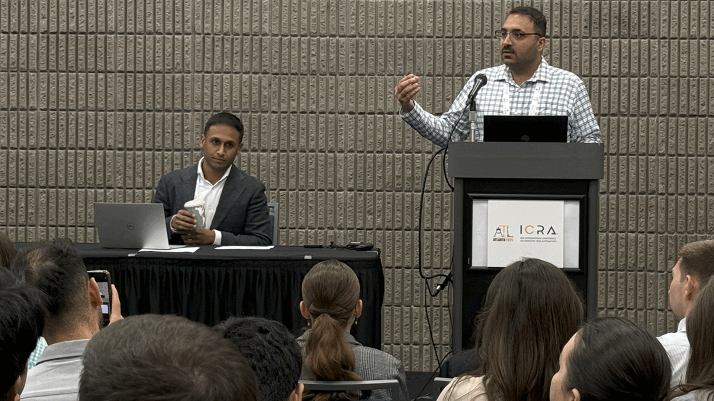

At the HeaRT lab, we are passionate about building robots for healthcare and surgeries!
The Healthcare Robotics and Telesurgery (HeaRT) laboratory is part of the Department of Mechanical Engineering and the Louisville Automation and Robotics Research Institute at the University of Louisville. We work on the design, mechanical modeling and control systems for very tiny continuum robots. These robots can help our surgeon collaborators reach disease sites in the human body that are otherwise not reachable.